(Except as specifically noted, throughout this document, "Keysight", "Agilent", and "HP" or "Hewlett Packard" may be used interchangeably, since the technology is virtually identical.)
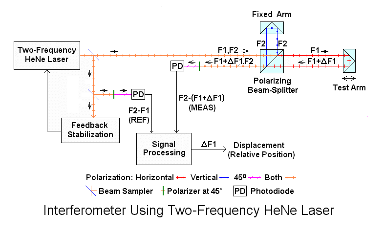
The Test Arm may be a tool head in a CNC milling machine, a stage in a semiconductor wafer stepper, a voice coil positioner in a hard drive servo writer, or any number of other precision devices. A single laser can be used with many independent measurement axes through the use of beamsplitters, separate interferometer optics and optical receivers, and associated digital processing channels.
The key attributes that make these lasers ideal for metrology applications are that they produce two optical frequency components a few MHz apart that are linearly polarized, orthogonal, and oriented along the X and Y axes (horizontal and vertical) relative to the laser baseplate. The optical frequencies are highly stable and the corresponding wavelength (the actual "yard stick") thus should be as well. And, they remain stable for the life of the laser without any maintenance. (However, environmental factors like temperature, pressure, and humidity must to be taken into consideration as they have a significant effect on wavelength.) Since the two frequencies originate from the same laser cavity as a TEM00 (single spatial) mode beam, they are inherently perfectly aligned with each-other, something not necessarily true of alternative techniques using other means such as an Acousto-Optic Modulator (AOM) to generate the second frequency component.
A typical 5517B laser with its covers removed is shown below:
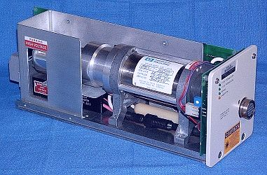
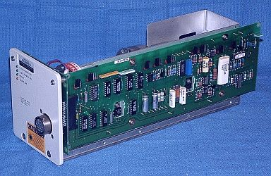
(Lasers made by Agilent starting around 2004 use a totally redesigned control PCB using mostly SMT parts which I call the "Type II Control PCB", but they are functionally equivalent and interchangeable.)
The heart of HP/Agilent two-frequency lasers is the custom HeNe laser tube assembly, which represents most of the cost of the laser. When the heart degrades to the point of making the laser unusable, the choices are either to obtain a replacement laser, do a heart transplant, or perform a heart rebuild. The transplant is simple, quick, and low risk: Find a good tube assembly in a laser that is broken for some other reason and pop it into a chassis with good electronics. Only one trivial adjustment is required. Problem solved. However, there's one slight difficulty with this approach: HP/Agilent lasers don't often fail for reasons other than the tube, and when they do, repair is generally very straightforward. So, there isn't a huge availability of good tubes in bad lasers.
Used HP/Agilent metrology lasers are also widely available. But many of these are already unusable due to low output power or other problems with the tube. Thus, finding one with both acceptable performance and adequate life expectancy requires a knowledge of what to look for and what tests to perform.
Lasers used in metrology applications are often run 24/7 from the day they are installed until the day they die or fail preventive maintenence checks. Such lasers invariably find their way to eBay and unscrupulous sellers will either claim the "came from a working environment", or an inability to test them. The working environment claim may not be inaccurate, it's just that the laser was pulled because it was dead, not that the line was shut down! :) But if a seller is reputable, has performed a few basic tests, and offers a warranty (even a relatively short one giving the buyer an opportunity to more fully test it), then a previously owned unit may be perfectly acceptable with low risk. Even where it has failed for other reasons like a bad HeNe laser power supply, a broken laser with a good tube may be easily repaired.
However, if it were possible to rebuild a bad tube, then this opens up a third possibility with performance potentially equal to that of a new laser at a fraction of the cost. When done properly, the laser would perform essentially like new and have a decent life expectancy (though possibly not as long as that of the original long-lived custom HP/Agilent tube).
A photo of a typical tube assembly removed from an HP laser is shown below:
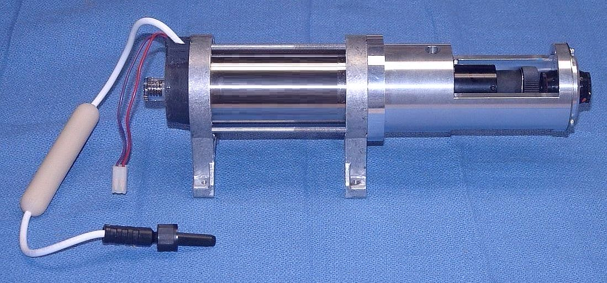
And a diagram of the internal structure of a typical tube assembly is shown below:
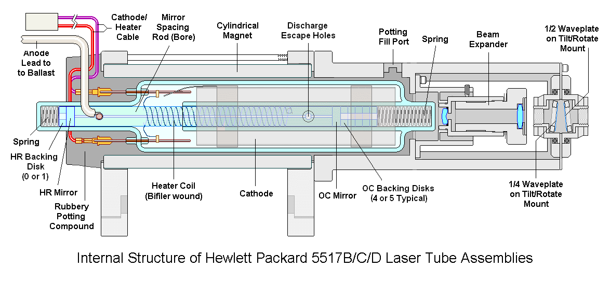
The tube assemblies in 5517C/D (and the 5501B) lasers are physically nearly identical while those in 5517E/F/G lasers have internal modifications to accomdate their shorter cavity length but are otherwise similar. By around 2012, this same laser tube design made its way into all 5517 lasers. The 5517A, as well as the 5518A/B and 5519A tube assemblies have a single-piece cast-metal casing with keying pegs to mount in their enclosures with no alignment. But the glass laser tube, magnet, and optical components in these are physically similar to those in 5517B/C/Ds and 5501B. The very old 5501A, and even older 5500A/B/C lasers used tube assemblies that were quite different with PieZo Transducer (PZT) tuning rather than thermal tuning. Rebuild options for these would likely be limited to regasing since the PZT tuning can't easily be replicated with a common commercial HeNe laser tube. However, most of the functional issues dealt with below would also apply to them. And in most applications, the 5501B is a drop-in replacement for the 5501A, so it's unlikely that anyone will consider rebuilding the 5501A commercially. Very few 5500Cs (and even fewer, if any, 5500A/Bs) are still in use making rebuilding of these even less likely. However used 5500Cs may be desirable for people wanting to keep legacy systems running with minimal effort and cost, so evaluation considerations are still relevant.
The Agilent/Keysight N1211A/Z4203 "Fiber AOM Laser" use a similar laser tube assembly. Therefore, except for specific mounting and alignment considerations once installed, everything below is also relevant for them.
When semiconductor fab lines shut down, the lasers often become available at various stages of their life. They appear on eBay and from many surplus dealers at costs ranging from $25 or less to several thousand dollars. However, almost any of these may be less than the cost of a rebuilt laser - and much less than the $8,000-$10,000 or more price tag of a new laser from Agilent. 5501Bs, 5517As, 5517Bs, and some 5517Cs are widely available. The 5517Ds are less common in working condition possibly because they are the highest performance common HP/Agilent laser still in use on state-of-the art fab lines, so they tend to become available only when pulled from service due to low power or associated (tube) failure.
If it were possible to have confidence in the operating condition and life expectancy of a previously owned laser, this would represent a low risk alternative to either a new or rebuilt one. Most of the evaluation guidelines for rebuilt lasers apply to used ones as well, so that would be a starting point.
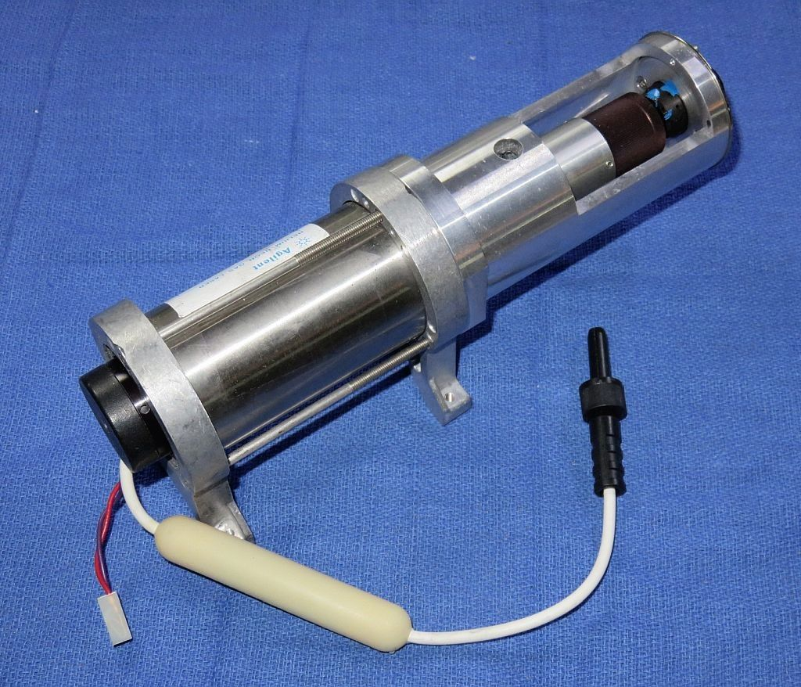
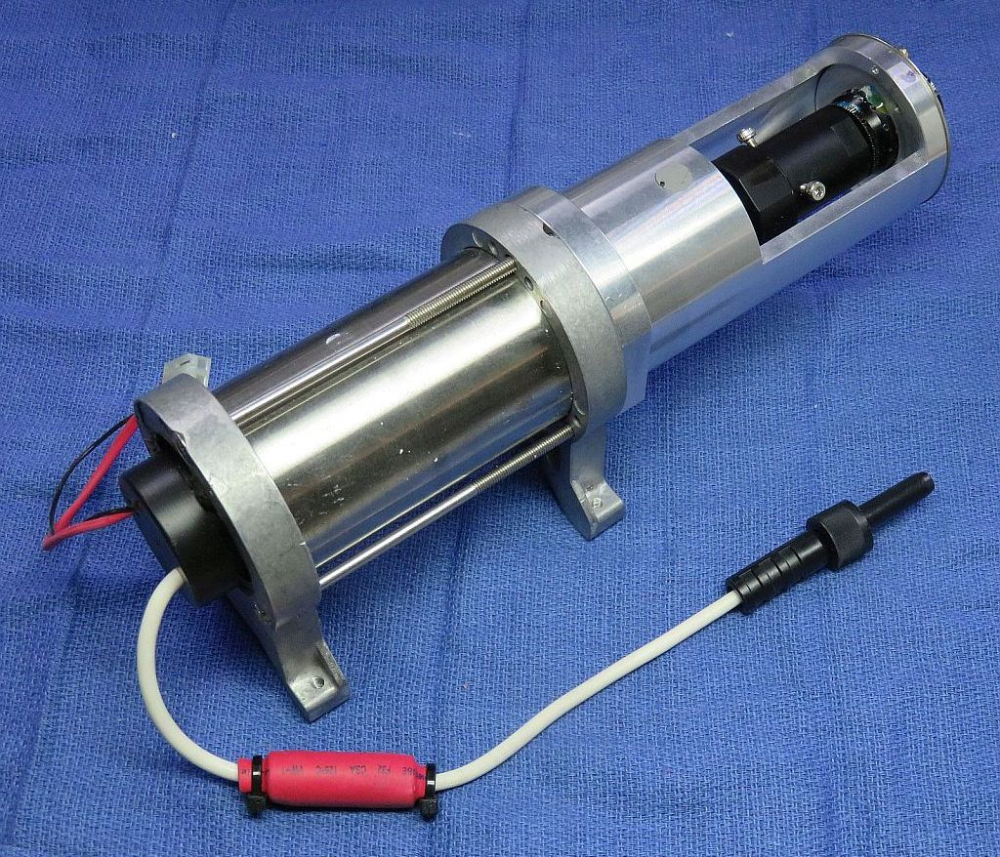
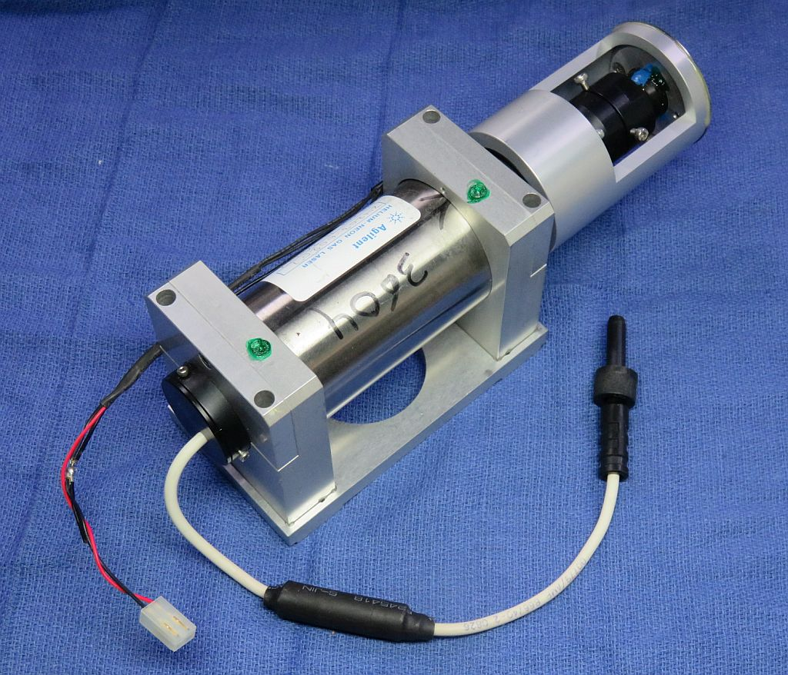
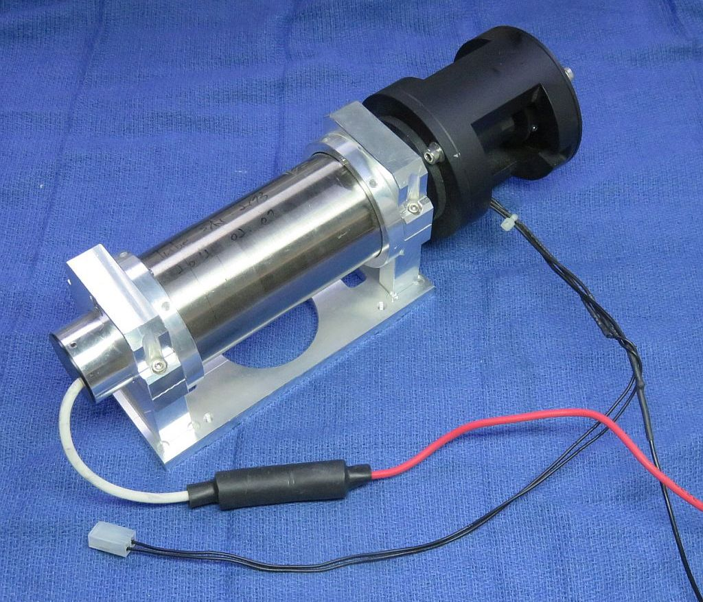
The differences in appearance of these tube assemblies are mostly related to the rebuilder's style. :) They have nothing to do with the laser model, split frequency, or beam size. While the N1211A (for the Z4203 Fiber AOM Laser) does have slightly different dimensions, the grossness of the frames, and bulbous optics mount on the second one, is inexplicable, except perhaps to make it difficult to install them in a 5501B or 5517! The conventional HeNe laser tube, magnet, and heater are physically similar.
(Note: I am not at liberty to divulge and/or am not even absolutely sure of the name of the companies who rebuilt these lasers or others I've tested, being either acquired from a third party or eBay, so please do not ask. There aren't that many doing this so a Web search should be able to locate them. The only one I can name is Pactec Second Source with whom I am affiliated. They can be contacted through their Web site or I can provide an email contact. DISCLAIMER: I receive a small commission on each rebuild.)
The HP/Agilent tube assembly consists of the actual glass HeNe laser tube, a permanent magnet, beam expander, and adjustable waveplates. The part that goes bad is the glass HeNe laser tube, which is mounted within the magnet using a rubbery potting compound. Rebuilding the laser tube will require that it be removed from the tube assembly as shown below:
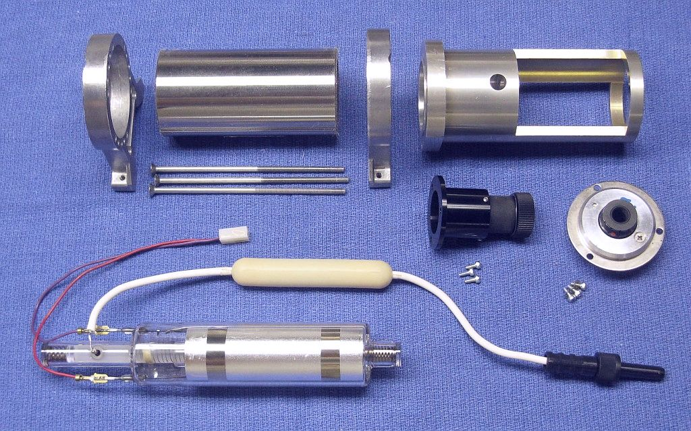
This tube assembly was also from a 5517B, but there are some very minor physical differences, which are mostly of little consequence, among other models using the "Long" type tube. While the collimation of the output beam can be fine tuned by freeing up the knurled section of the black beam expander with a heat gun, it is not adjustable in terms of the beam diameter, and this may make it more difficult to match up with a non-HP/Agilent laser tube.
Lasers like the 5517E/F/G as well as late model 5517B/C/Ds use slightly different tube design called a "Short" type tube, which as its name implies, is shorter than the Long tubes. ;-) However, nearly everything discussed below applies to them as well, though they produce a narrower lower divergence beam which means the beam expanders for the Long and Short tubes differ.
Rebuilding an HP/Agilent tube assembly can take two forms:
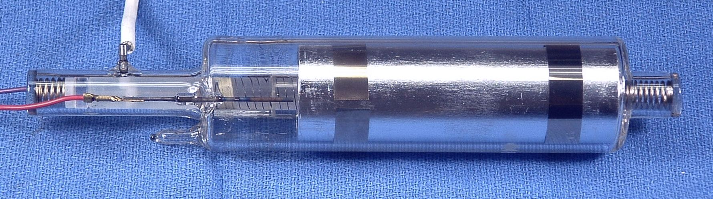
The second view shows the glass nipple at the bottom that would need to be carefully cut in a dust-free environment and attached to the vacuum/gas handling system.
This glass laser tube is normally not considered a separate replaceable component, only the complete magnet/optics assembly (with the tube). And Agllent probably won't sell the tube assembly to a third party anyhow. While most other parts of the the currently supported lasers may be obtained at highly inflated prices direct from Agilent, laser tube assemblies are listed as: "Not orderable, contact Agilent for repair service". And even if they could be ordered, the cost would probably be nearly the price of a new laser, if not more.
Removing the glass tube intact from the tube assembly is the sort of thing that anyone in their right mind would only attempt at most once unless appropriate noxious chemicals are available to dissolve the potting compound without damaging anything else in the assembly (except that they likely rot human internal organs). Mechanical removal using piano wire, saws, knives, and other instruments of torture is possible, though extremely tedious and time consuming for most of the lasers with tubes that conform to the diagram, above. Even the trained monkeys hired to do this would consider it cruel and unusual punishment and quit after 1 or 2 tubes despite the promise of unlimited bananas. :) For all tubes, it might be possible to simply cut the magnet lengthwise with a low vibration high speed diamond cutoff wheel, and then replace the magnet with a new one. Once the magnet is gone, it's relatively easy to pick and peel off the potting compound. While the glass tube is physically the same for the 5517A, 5518A, and 5519A/B, removing it requires cutting apart the outer casing. But, if the glass tube is to be reused as with regasing, the extraction must be done with great care to avoid damage to the glass envelope or internal components. Otherwise, a hammer and chisel will suffice. :-)
The benefit of regasing is that most of the vital original parameters of the special HeNe laser tube are preserved, especially if it is replaced in the same magnet/optics assembly at the same orientation so that no adjustments of the waveplates are required. Thus, the beam diameter and divergence, and the stability of the internal heater should be unchanged. However, without knowing the original isotope ratio and gas fill pressure, there could still be differences in optical frequency, split (Zeeman, REF) frequency, and other parameters. While the cavity loss and Zeeman magnet strength probably have the dominant effect on the REF frequency and are likely the primary means of setting it for lasers up through the 5517D (4.0 MHz max), both the isotope ratio and gas fill pressure have a dramatic impact on the optical frequency of the center of the neon gain curve. And either of them (though especially the isotope mix) could affect the effective width of the neon gain curve, and this impacts the mode pulling that gives rise to the Zeeman split of the central longitudinal mode, and thus the REF frequency. Based on data from industry sources, it appears that HP/Agilent lasers use a gas-fill that is weighted toward 20Ne to narrow the gain bandwidth.
A typical conventional 6 inch HeNe laser tube is shown below:
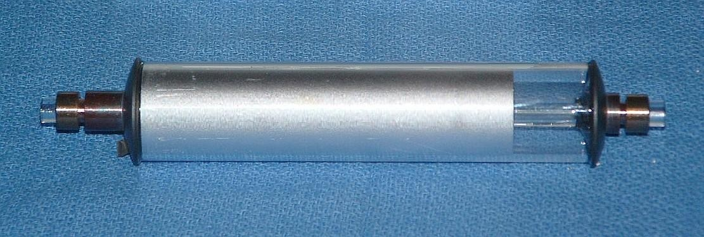
Then, a heater with electrical characteristics similar to those of the heater in the original tube must be installed on the exterior of the replacement tube:
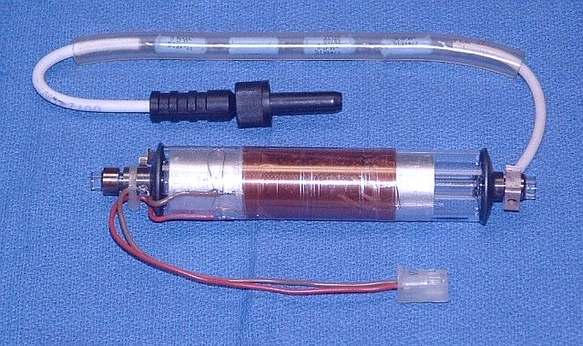
The tube above was actually mounted in the magnet assembly from an HP-5501A laser (because that was available) and installed in a 5517D laser chassis (because that was available). It locked and produced a usable output, though at a REF frequency of only 1.2 MHz. Normally, a 5501A would be between 1.5 and 2 MHz, but due to the use of the standard tube, the REF frequency was lower.
When a similar tube was installed in the magnet from a 5517B laser which normally has a REF frequency of 1.9 to 2.4 MHz, it produced a beat frequency of only about 1.3 MHz max. But these two tubes had been selected for high output power. When the rear mirror was deliberately misaligned to reduce the output power, it was possible to obtain REF frequencies from 1.5 to 2.4 MHz at somewhat lower, but still very decent output power. This would exceed the HP/Agilent minimum power specification by a factor of 2 or 3 when set for the 5517A or 5517B REF frequency, and still be comfortably above it when set for the 5517C REF frequency. It might be possible to reach the range for the 5517D (3.4 to 4.0 MHz), though that my be marginal. So, in a pinch, a standard tube might work, but would be a less than optimal solution due to the much lower life expectancy of the typical small HeNe laser tube - 12,000 to 16,000 hours.
A tube with a mirror adjuster added was then installed in the magnet assembly from the 5517B laser shown above, and that was installed in the 5517B body as shown below:
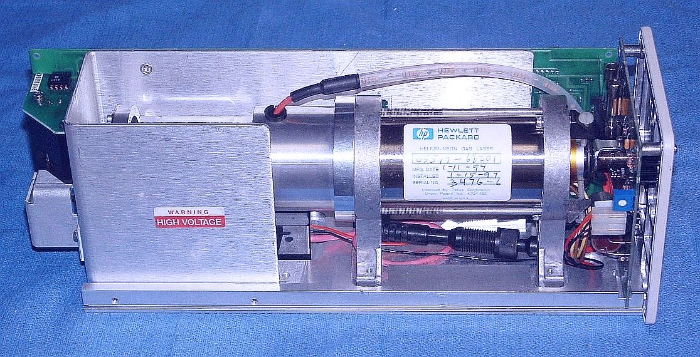
After adjustment of the waveplates, it produced a good MEAS signal, in fact actually cleaner than that of the commercially rebuilt laser described below.
These were only lab experiments, never intended to find their way into commercial products or applications. Nonetheless, it's quite possible that the rebuilt laser I tested was implemented in a similar way. (More on its characteristics below.) And, it is known based on photos and descriptions that several companies rebuild 5517B/C/D lasers using a conventional HeNe laser tube and external heater.
The benefit of using a conventional HeNe laser tube is that it doesn't require high vacuum equipment, ultra pure gases, glass working, and other sophisticated processing by the laser rebuilder. When done on a small quantity basis, these can require substantial investment in high tech equipment and the skills to go with it. Even if the laser tube supplier has to modify their "recipe" starting with the mirror parameters (reflectance and radius of curvature), but possibly gas-fill (He:Ne ratio and pressure) as well, that should be much less expensive and risky than developing the capability to rebuild tubes in-house. A company that produces HeNe laser tubes routinely, will have the experience to get the processing correct. And since there's no need to save the original tube, it can be removed from the magnet assembly quickly using any method that works. :) However, as time passes, fewer companies manufacture HeNe lasers of any type, and getting their attention to provide a custom tube or even modify an existing design for a small production run will be challenging, to say the least. Money may talk but it would likely have to be way more than could be justified based on projected sales. Thus, an off-the-shelf tube is probably the only viable option.
Many parameters of the laser can change converting to a non-HP/Agilent tube and some of these may impact measurement performance and lifetime. Two key issues with such a rebuilt laser that I have tested were the beam alignment and profile, and jitter or "fuzz" in the MEAS signal. The beam alignment and profile can be dealt with by devoting sufficient care in optics selection, and final adjustment and testing. However, the fuzz was traced to the existence of "rogue" longitudinal modes in the laser output, due to a laser tube that had too long a cavity. Normally, the output of these lasers when locked is a single Zeeman-split longitudinal mode consisting of the two frequency components, F1 and F2, separated by a few MHz. Rogue modes are additional longitudinal modes (generally far away from the main modes) and tend to not be oriented with the X and Y axes so they cause potential problems in the interferometer. And life expectancy is a total unknown. Small conventional tubes may have a relatively short life, possibly as little as 5K to 10K hours.
The Zygo 7705 laser which has specifications similar to those of a 5517D is based on a very short tube of conventional design with a total length of around 10 cm (roughly 9 cm between mirrors). It is a custom long-life tube made by or for Zygo and is not available for non-Zygo uses. The closest commercial HeNe laser tube is the Spectra-Physics 007 (same as the Melles Griot 05-LHR-007) with a cavity length of about 11 cm. These were used in large quantities for HeNe laser-based hand-held barcode scanners. These are now very obsolete, so availability of new tubes would be unlikely. However, in experiments similar to those above but using an SP-007, no rogue modes were present. Overall performance was promising with relatively clean REF and MEAS signals, but there were still some deficiencies which might be fundamental to the tube design. Even if these could be resolved, without modification, tubes like the SP-007 would likely only be suitable as 5517A/B replacements, not for the 5517C/D/E/F/G. And their life would be quite short compared to the HP/Agilent or even Zygo tubes. So, with the SP-007 being problematic even for the 5517A/B, it's unlikely that any off-the-shelf HeNe laser tube will be truly suitable, especially for lasers like the 5517D which are in most demand in terms of replacements. Unless someone has the resources to have a company like Melles Griot produce a totally custom tube to their specifications, rebuilding HP/Agilent lasers in this way with acceptable performance and decent life expectancy may not be feasible. And statements to the contrary should be taken with a grain of optical glass. :-)
Note that the time-to-lock from a cold start is generally much longer when a tube like this is used since the heater whose electrical power is imited must raise the temperature of a much larger volume of glass (the tube's outer envelope) so the effects are slower. With very small narrow tubes and a heater winding that spans nearly their entire length, this difference may be minimal but for those similar in size to barcode scanner tubes and a short heater, it could be double or more - over 10 minutes compared 4 or 5 minutes for a standard 5517 laser. This is generally of no consequence for a system that is turned on once and left on 24/7 until it dies. But the "Tool" it is in may complain if the time-to-READY exceeds a specific value. In that case, power cycle or reset it and the subsequent warm-up time should be acceptable.
Companies Selling Replacement Tubes
I am aware of two suppliers for glass HeNe laser tubes designed to replace those in HP/Agilent/Keysight lasers. Neither tube manufacturer provides the complete tube assemblies at present, only the glass laser tube itself:
DISCLAIMER: I am a small investor in and consultant for PLT and was involved in the design of the LHZ tubes.
With both of these, one cannot expect to just drop the tube into a magnet from which the bad tube was removed without possibly requiring magnetic field tuning up or down. For any given model, there was a wide range of magnetic fields to accomodate variations in tube parameters. If the field needs to be increased to boost the split frequency, the laser should be checked for rogue modes using an SFPI. The ballast requirements may also differ for these conventional tubes compared to either Long or Short HP/Agilent/Keysight tubes, generally requiring additional ballast resistance at the anode and/or cathode to assure the dropout current is sufficiently below the 3.5 mA default operating current over temperature and lifetime. Contact the respective manufacturer for details.
The beam profile on a used laser should not have changed unless someone attempted to adjust it or swap optics to convert from one beam diameter to another (e.g., from 6 mm to 9 mm). Swapping standard HP/Agilent beam expanders doesn't usually cause problems.
The near field beam profile of a laser rebuilt using a conventional HeNe laser tube was found to be noticeably different than that of an original HP/Agilent laser with the 9 mm beam diameter option and in fact could not be installed in at least some Tools. There is a distinct hot spot in the center, very obvious by eye. While it should be possible to make this laser work in its intended application when new, it may be more sensitive to changes in interferometer alignment or may degrade more rapidly compared to the normal 9 mm beam profile. The profile looks more like a 6 mm beam where the edges are not cut off, as is normally the case with the HP/Agilent optics, rather than a true 9 mm beam where a higher power diverging lens is substituted in the beam expander and the center portion is enlarged by 50 percent. So, this may just be a 6 mm beam expander with a larger output aperture. Thus, the behavior will be somewhere between that of the normal 6 mm and 9 mm optics. In principle, it should be possible to correct the beam profile by decreasing the focal length of the expanding lens in proportion to the ratio of beam diameters, assuming the collimating lens has a large enough diameter and appropriate aperture.
None of these is likely to change in a significant way over the useful life of the laser. However, when the output power declines to well below the HP/Agilent spec'd minimum, amplitude ripple in the output power due to laser current ripple from plasma oscillations and/or the HeNe laser power supply itself, can interfere with a clean beat frequency.
The basic setup used to evaluate HP/Agilent lasers is shown below:
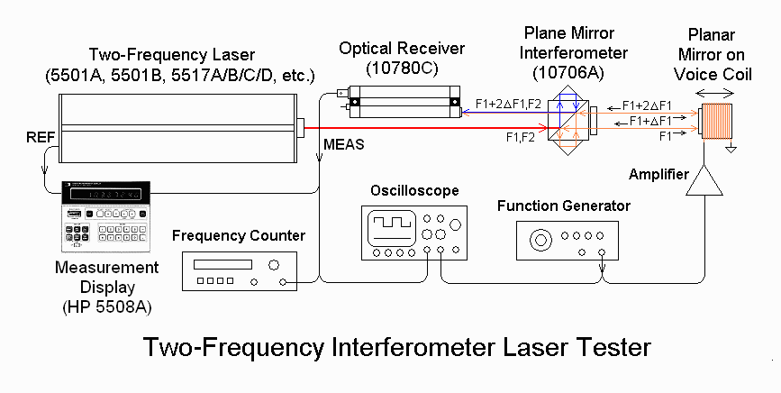
Any HP/Agilent 5501A/B or 5517A/B/C/D/E/F/G laser can be very quickly evaluated for basic functionality. The oscilloscope display was what initially called attention to the rogue mode issue.
The effect of rogue modes that aren't aligned with the X and Y axes will be interference or baseband fringes that will result in low frequency level shifts of the signal in the optical receiver as the tool or stage is moved. Essentially the same thing will happen if the normal Zeeman (F1 and F2) modes are not pure or are not aligned with the X and Y axes. (Or the entire laser isn't aligned with its baseplate parallel to the X or Y axis.) This may cause small transient errors in position while the tool or stage is in motion. However, the end-points may be accurate if the DC level shift resulting from the periodic static errors is ignored by the AC-coupled optical receiver circuitry.
The MEAS signal may become fuzzy from duty cycle variations but only when the position is changing. It will appear normal when everything is stationary. While the exact effect on accuracy is not known, theory suggests that there could be errors of up to 10s of nanometers while the tool or stage is in motion, but no error at the end-points, though the settling time may be larger. However, there could be ripples in the velocity (or other) function that needs to be feedback controlled between end-points.
The symptoms are as follows: The MEAS signal out of the optical receiver should be a clean square-wave with approximately a 50 percent duty cycle. As the remote mirror or cube corner moves, the period/frequency of the square-wave gets smaller or larger due to Doppler shift but the duty cycle remains the same. The system determines position by accumulating the relative phase difference between MEAS and REF, which is a square-wave of fixed frequency, the unmodified Zeeman beat output of the laser
These two photos show an example of a normal MEAS signal with clean rising
and falling edges, and a MEAS signal where there is a small amount of movement
of the remote mirror. In fact, it's likely that both the rising and falling
edges are moving back and forth, but since the oscilloscope only triggers on
the rising edge, that one appears sharp. (The jaggedness in the falling
edge is an artifact of the wiring termination.)
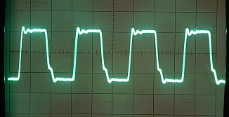
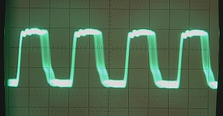
The photos below made using a Scanning Fabry-Perot Interferometer (SFPI) show the longitudinal modes of a normal 5517 laser on the left with those of a 5517 laser rebuilt using a conventional HeNe laser tube that had rogue modes on the right:
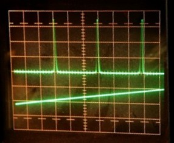
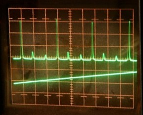
The large peaks consist of both F1 and F2, but the SFPI: is unable to resolve the difference in frequency of only a few MHz. These are the normal split longitudinal mode of the Zeeman laser. As can be seen, there is no evidence of any other modes in the left photo display of the normal 5517 laser. In fact, a genuine HP/Agilent laser will have at most 2 modes present as warmup when the modes are sweeping though the split neon gain curve, but supports only a single (split) mode when it is locked and centered. The display of the laser on the right with the rogue modes has a pair of smaller peaks on either side of the main peak for a total of 3 modes.
The FSR of the SFPI is 2 GHz. (The FSR or Free Spectral Range is essentially the longitudinal mode spacing of the SFPI cavity, and is thus the maximum extent in optical frequency over which there is no aliasing in the display - it is unique.) So, a 2 GHz FSR means that the longitudinal mode separation of the laser is either around 667 MHz or 1.33 GHz (aliasing due to the 2 GHz FSR). A mode spacing of 667 MHz cannot be correct as that would imply a distance between laser tube cavity mirrors of almost 9 inches - more than the available space! So, the smallest peak to the left of the large peak of the Zeeman modes actually goes with the previous large peak. And the other not quite as small peak to the right of the large peak of the Zeeman modes actually goes with the next large peak. Thus, the spacing of the rogue modes with respect to the F1/F2 modes are approximately +/-1.3 GHz corresponding to a laser tube cavity length of about 11.3 cm or 4.4 inches.
I did eventually confirm by visual inspection after removing the back cover and beam expander that the tube is indeed slightly less than 5 inches in overall length, which would be consistent with that cavity length after accounting for the thickness of the mirrors. I also sent the raw beam across the room and confirmed that it is TEM00 and no higher order spatial modes were evident. And, with very very careful adjustment of the SPFI alignment which causes its FSR to effectively double to 4 GHz, the display was as expected with one large central mode (F1/F2 displayed as a single mode due to the limited resolution of the SFPI) and two weak modes on either side around 1.3 GHz away.
The diagrams below show why rogue modes can be present. If the tube is too long and its longitudinal mode spacing (the FSR of the tube equal to c/2*L) is thus small enough, an adjacent longitudinal mode on each split neon gain curve may be above threshold and thus oscillate. One will be approximately 1 FSR above and the other will be approximately 1 FSR below the Zeeman modes. (The distance is approximate due to mode pulling effects.)
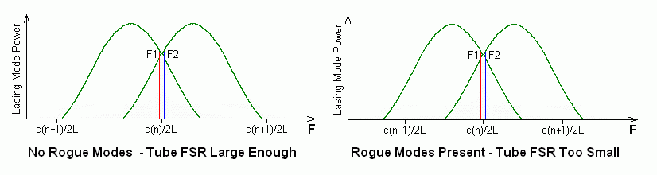
Normally, with the main lasing mode centered on the gain curve as it is here, there would be no chance of any other longitudinal modes having enough gain to lase in a tube with a cavity length of less than about 7 inches. (The difference between the optical frequencies of the F1 and F2 modes is greatly exaggerated in this diagram. If drawn to scale, they would almost merge into a single line and can thus be considered to be centered.) However, Zeeman splitting effectively widens the gain bandwidth for lasing with one part moving higher and the other part moving lower in optical frequency as shown above. So even a very short tube can produce rogue modes under some conditions. The use of isotopically pure neon may be required to suppress rogue modes since it results in a much narrower gain curve and thus a narrower Zeeman split gain curve. Thus, HP/Agilent tubes with their 5 inch cavity length are rogue-mode-free. The cavity losses, most notably due to mirror reflectivity, also determine whether modes that are on the tales of the gain curve will oscillate. So, a long tube with lower reflectivity mirrors could still be free of rogue modes, at the expense of output power in the Zeeman modes. This is all a balancing act and unfortunately for this tube, it fell over. :( :)
By rotating a polarizer in front of the laser while observing the SFPI display, it was possible to determine the orientation of the rogue modes. They were orthogonal to each-other and at approximately a 30 degree angle with respect to X and Y. At this point, such a result was expected (actually hoped for since it was the only explanation that made sense!) but still surprising, as all the longitudinal modes of a laser tube are normally oriented along a single axis, or orthogonal to it, and these were off by 30 degrees. However, this could mean that the rogue modes are elliptically polarized (before entering the waveplates) rather than being (nearly pure) circularly polarized like the Zeeman modes.
The reason that the rogue modes at 30 degrees cause signal degradation is that some portion of each rogue mode passes through both the reference arm and measurement arm of the interferometer, and thus they interfere with themselves at the optical receiver, resulting in the baseband fringes. These change the level of the signal envelope, and confuse the receiver electronics, essentially by shifting the threshold that is used to convert to the optical receiver's digital output. This effect is similar to that of misaligned or impure normal (F1/F2) modes.
The signal jitter using a 10780A or 10780C optical receiver is probably a worst case. The higher performance E1708A or E109A may be less susceptible to signal envelope level fluctuations.
By adjusting the waveplates, it was possible to produce a MEAS signal with little or no jitter. In fact, by eye, the signal quality was such that on any other laser, it wouldn't warrant a second glance. However, when set this way, there was significant crosstalk between F1 and F2 indicating that their output was probably elliptically polarized rather than purely linearly polarized. The signal should nearly disappear when a polarizer is aligned with the X or Y axis, but with this laser, it's amplitude was still 20 or 30 percent of the peak with the polarizer oriented at 45 degrees.
The good news is that since the two rogue modes are already low level, they may actually disappear after the laser is used awhile and the overall gain (and output power) decreases!
Rogue modes (at least those that are not aligned with the X and Y axes) should not be present in used lasers.
For a much more in-depth treatment of this topic, see reference [5].
Note that even if rogue modes are present, if they are aligned with the X and Y axes, the only effect will be to slightly decrease the signal level relative to output power. It's possible that careful adjustment of the waveplates could eliminate the effects of the rogue modes by aligning them with the X and Y axes. It's also possible that rogue modes could exist in genuine HP/Agilent lasers but go undetected if aligned in this way. Testing with an SFPI is not something that would be done routinely. However, with one exception, all tests I've made with HP/Agilent as well as Excel two-frequency lasers show that there is NO evidence of rogue modes when the Zeeman-split mode is centered and locked. Zero, zip, null. :) The one exception was a like-new 5517C laser, and these were down around 1 percent relative to the F1/F2 modes, still likely of no consequence. They may actually have been higher order spatial modes.
I've only seen one instance of a 5517 laser that exhibited random dropouts, likely due to a poor internal cathode connection. These would result in the tube actually winking out and restarting with a frequency of a few minutes to many hours. It's possible the laser had been dropped or otherwise abused but there was no visible evidence of anything out of the ordinary even after examining the glass laser tube itself.
However, due to the change in thermal characteristics of a laser rebuilt with a conventional tube, a loss of lock after READY has come on solid may not be unusual but the laser will eventually settle down and behave.
Where a new conventional (but possibly modified) HeNe laser tube has been installed, the lifetime will depend on its construction and quality. Typical commercial HeNe laser tubes have an expected life of 10,000 to 20,000 hours with some going to 40,000 hours. But since a very small tube must be used in the the HP/Agilent lasers (due both to space limitations and the required longitudinal mode structure), the life could be much shorter. The cathode area is small and the gas reservoir is small. Such tubes may have a life of only 5,000 hours, though there are exceptions - Small Zygo tubes last 20,000 hours.
This should not be an issue with a used laser unless the tube assembly has been removed and reinstalled, or transferred to a different laser body, and then only horizontal alignment can really change unless something is preventing proper seating of the tube assembly feet. Then it's just a matter of loosening the 4 mounting screws and readjusting it horizontally. (On lasers with a pair of flat-head tube mounting screws, even changes in horizontal alignment are not likely assuming the two flat-head screws were carefully tightened before the other two screws.)
For a rebuilt laser, a large pointing error most likely indicates poor attention to detail during the final alignment. Depending on the design of the beam expander and access to its adjustments, it may be necessary to remove the tube assembly and perform the alignment with the aid of a jig that precisely positions the tube assembly with respect to a pair of apertures through which the beam should be adjusted to pass cleanly. However, since the tube will likely already be potted and fixed in the magnet assembly, it probably won't be possible to select the beam height and vertical angle independently so some compromise will be needed.
A rebuilt laser using a conventional HeNe laser tube required about 7 minutes before the READY LED started flashing, and over 9 minutes for the READY LED to come on solid. It just barely got in under the deadline.
A used laser with adequate output power should lock in the normal 4 minutes if it has the Type I or Type II Control PCB and the temperature set-point is adjusted correctly. Only when the output power is very low and well below HP/Agilent specs, will locking time be affected. The laser may never lock, or it may only lock after the output power has climbed above 80 to 120 µW for most versions. However, lasers with the Type III Control PCB tend to take longer to lock - 6 minutes or more. These are not very common though.
So, a rebuilt laser should be checked to make sure the REF frequency is acceptable, either based on the model and options of the original laser, or based on those of the Tool in which it is to be installed. A higher REF frequency translates into a higher maximum velocity capability for the measurement system, so a rebuilt laser with a higher REF frequency should be acceptable if the data processing electronics can handle it without producing measurement errors, or aborting due to detecting that it is out of range. But the expected increase in REF frequency due to aging should be factored into the determination of whether it will continue to work correctly later. A rebuilt laser with a short useful life will be no bargain. However, if the REF frequency is below the spec'd minimum, performance may be unacceptable in speed-critical applications, or the machine may generate an error during self test and refuse to work at all.
The actual REF frequency of a used laser should not be an issue except to the extent it has increased with use, which may be a tip-off to its future life expectancy. Even if the output power is well above the spec'd minimum, an excessively high REF frequency may indicate that the original output power was much greater, and the laser is probably near end-of-life. However, the REF frequency can be lowered relatively easily so a bargain laser the seems healthy in all other respects may still be useful. It is also sometimes possible to increase REF, for example, to convert a 5517B into a laser that meets all 5517C specifications.
However, since it is possible to reduce the REF frequency and place it back into the acceptable range by reducing the Zeeman magnet strength (which as a byproduct may slightly increase output power), even knowing the original value for REF when new is not a foolproof way of flagging a high mileage laser. The modified REF could even be lower than what it was originally! Without data on the original measured external magnetic field (which probably doesn't exist), there is no way to know positively that a laser hasn't been modified in this manner. Thus output power is still the more reliable indication of laser health, even taking into consideration the small boost that may occur when reducing the magnet strength.
A rebuilt laser using a conventional HeNe laser tube was tested to be about 75 MHz above a healthy HP/Agilent laser. This is still only about 0.15 ppm difference, though it does represent a much larger deviation than even an end-of-life original HP/Agilent laser.
The test setup is shown below:
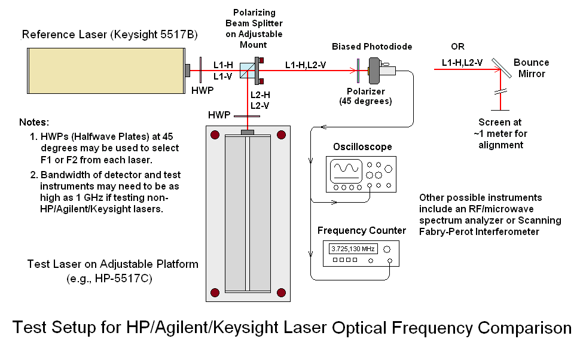
A rebuilt laser using a conventional HeNe laser tube had a frequency variation over 8 hours of less than +/-2 MHz, and this is very conservative. It could be much less.
The optical frequency tends to decrease with use. For a used laser, it's never likely to be so low as to not meet HP/Agilent specs for optical frequency, but this, too, can be used as a guide to the health of the laser.
Most common HeNe laser tubes can have some detectable change in beam pointing as they warm up from dimensional changes in the tube structure and mirror mount stems until reaching thermal equilibrium. HP/Agilent tubes much less susceptible to these effects due to their rigid glass construction.
Testing output alignment from power-on through locking and a few hours after that can be done by sending the beam 10, 20, 50 feet or more and monitoring its position and profile with a time lapse camera or similar setup. Even very small changes in beam pointing from the laser tube may be amplified by the beam expander.
A simple test for a fractured rod is to press *gently* sideways on the glass protrusion at the back of Long tubes. Here, "gently" means no more than a pound or so - we don't want to break the thing! There should be little or no change in output power regardless of the orientation of the force. A laser tube with a fractured rod that passes the other tests may still be usable but the only way to know if it will remain consistent would be to run it for many hours and power cycles.
Confirm that the +/-15 VDC power supplies have the required specifications (voltage accuracy and current ratings). It would also be desirable to run everything on a power conditioner and/or constant voltage (e.g., Sola) transformer to rule out incorrect or noisy power as a cause of unexpected behavior, should any occur. And, of course, if the cabling isn't idiot-proof, double check the connections BEFORE applying power!
A laser that takes a long time to start but runs reliably may be perfectly acceptable, especially in applications where the laser is then run continuously for days or longer. However, starting can be hard on the HeNe laser power supply, and some measurement display electronics will give up after a fixed amount of time like 10 minutes, and produce a non-recoverable hard error.
The 5500A/C and 5501A should lock in 10 to 20 seconds as they use PZT rather than thermal tuning, which is much faster.
A healthy used laser should lock in about the same time as a new laser. However, a rebuilt laser with a conventional HeNe laser tube may take much longer to lock. And a used laser with marginal output power may go through a few locking cycles before the power has climbed high enough to be acceptable.
Sometimes, the locked output power when new is printed on a label on the backplate of the laser. Depending on the specific model and options and particular sample, this can range from around 250 µW to over 600 µW. How far the output power has declined relative to the printed value is good indication of the laser's usage, though this is not necessarily a linear function. However, being near the minimum acceptable value would be a cause for rejection.
For a rebuilt laser with a conventional tube, the output power may go down slightly as the mirror alignment changes slightly with temperature. This doesn't generally happen with HP/Agilent tubes which use a rigid (glass or Zerodur) mirror spacing rod for alignment.
Note that a measurement of output power should only be considered accurate once the laser has locked and READY is on solid. Before then, it may vary by 25 percent or more due to mode sweep, especially for a high mileage tube whose output power has declined significantly compared to its value when new.
Neither mode alignment nor mode purity should change in a used laser. But in a rebuilt (or new!) laser, alignment being off by more than a degree or so would be an indication of bad quality control during final adjustment of the waveplates. Lack of pronounced null points when the polarizer is aligned with the X or Y axes indicates crosstalk between the F1 and F2 optical frequencies and may also be the result of errors in waveplate adjustment, or that the waveplates were set up to eliminate the effects of rogue modes in a rebuilt laser at the expense of mode purity. These problems should be corrected by the supplier, and if not possible, the laser should be rejected as both have the potential to introduce periodic static or dynamic measurement errors.
Before locking when there is no REF signal, it's not unusual for an optical receiver set at maximum sensitivity to produce an output due to very low level amplitude ripple caused by the HeNe laser power supply, particularly older versions like the VMI PS-148 (or one that is defective). An HeNe laser power supply with lower current ripple like the VMI PS-373 would probably eliminate the residual ripple, but as long as REF is clean once locked, it's probably of little consequence.
A REF frequency that is very close to or below the minimum spec'd value for the particular model laser (e.g., 2.42 MHz for a 5517C spec'd at 2.4 to 3.0 MHz) may indicate that the wrong tube is installed (a 5517B in this example) by someone trying to pass a 5517B off as a 5517C, or that some "event" has reduced the strength of the Zeeman magnet. REF is typically set at 10 to 20 percent above the spec'd minimum in new lasers to account for a downward drift after warmup in the hottest working environment.
For a used laser, the optical frequency relative to a similar known laser that is new, has seen little use, or has been run for a known amount of time, can provide another indication of how much use it has seen. The difference in optical frequencies for a healthy laser will typically be only a few MHz, while one near end-of-life may be lower by 15 MHz or more.
It's not clear that knowing the absolute optical frequency is of much added value for any of these lasers, except possibly to use it as a reference in testing other similar lasers in the future. So, comparing with a low mileage HP/Agilent laser is as good as comparing with an iodine stabilized HeNe laser.
(Although the HP/Agilent specification for laser wavelength changed by -0.000018 nm, an amount corresponding to an optical frequency increase of +14 MHz between the 5517B and 5517C, there is no evidence that an actual change was made in the design of the laser. Testing shows no obvious difference in the optical frequencies of the 5517A, 5517B, 5517C, 5517D, or 5517E, or the 5501B.)
However, since this test does require another similar HP/Agilent laser in known working condition, and a somewhat more complex setup to perform, the time, effort, and expense may not be justified if the other tests indicate good health.
Note that the above list does not include the temperature set-point adjustment as described in the HP/Agilent manual. This should be valid for new, used, or rebuilt lasers with HP/Agilent tubes. But, it may need to be modified for a rebuilt laser with a conventional tube.
However, depending on the technique and quality of the work in rebuilding a laser, a new set of isseus can arise, requiring careful acceptance testing and periodic checks of performance. So far, there is very limited data on these lasers. I have only tested a single 5517D from a single company that had installed a conventional tube in place of the original HP tube. This laser (used as the example above) had very obvious beam profile and rogue mode issues. Quite possibly, it could be made to work in certain applications, perhaps all but the most critical ones. However, there have been reports from Field Service personnel of an inability to follow the manufacturer's alignment procedure due to some aspect of this laser, possibly the beam profile. But that at least could probably be corrected through modification of the beam expander optics. However, I do not believe that any adjustment (e.g., realignment of the waveplates) or modification could eliminate the rogue modes since they inherently appear at an angle to the desired modes. They could potentially compromise signal quality and accuracy, though it is not known to what extent either of these would impact a practical application. And of course, with any laser that has been modified without HP/Agilent's strict quality control, there would be some risk, so rigorous adherence to a weekly or monthly test and calibration regiment would be essential in identifying and tracking any changes in performance over time.
These same issues could occur with other Zeeman lasers such as those from Excel Precision [6], Zygo Corporation [7] or other companies claiming to have compatible Zeeman lasers. Excel's 1001A/B/F and Zygo's 7705 are similar to those from HP/Agilent but both use HeNe laser tubes of conventional design, though most likely with special modifications to satisfy the requirements of the Zeeman laser application. (The other metrology lasers from Zygo such as the 7701 and 7702 are based on different technology. These already use HeNe laser tubes of conventional design custom built by or for Zygo to achieve long life but it may be possible to use tubes from other manufacturers as replacements [8]. There would still be some areas that could change if the laser is rebuilt, but they would be limited to slight differences in beam profile, and a likely shorter life [9].)
Several companies have listings for Zeeman split two-frequency
However, nothing is known about these companies beyond what is listed on their Web sites and that is minimal in all cases, so their products would need to be evaluated in the same way as rebuilt lasers. So far, inquiries have either been ignored or the replies have not been very helpful.
If anyone has a rebuilt HP/Agilent laser or one of these or other clones, I would be happy to evaluate its performance based on the tests described above. Please contact me via the Sci.Electronics.Repair FAQ Email Links Page for more informataion.
Back to Top
References and Links
I may be contacted via the Sci.Electronics.Repair FAQ
Email Links Page.